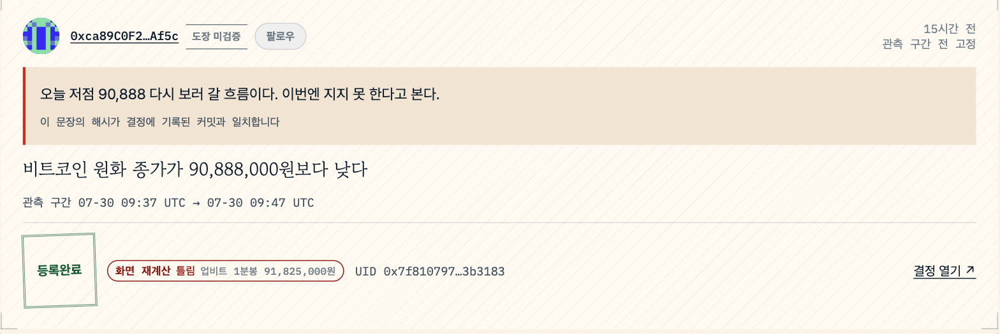
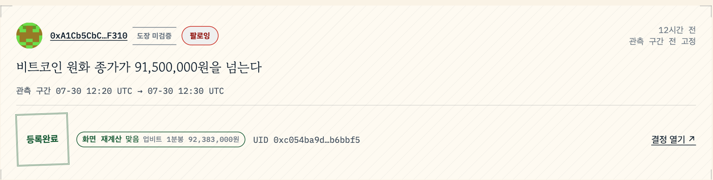
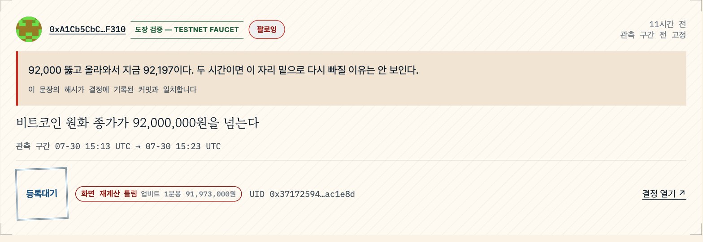
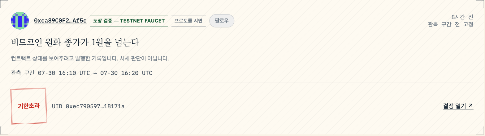

마루
대청마루 — 사람들이 모여 앉아 판단을 나누는 곳
팔로우한 사람의 사전 판단과 실제 결과를 함께 보는 소셜 피드
2026.07
결과를 알기 전에 고정한 판단이, 맞았는지까지 보인다
- 여러 지갑의 판단 — 시간 역순
- 구간 종료 후 업비트 1분봉 재계산
- 맞음·틀림 동시 표시
- 틀린 판단도 그대로 남음
고정한다
기존 POI 스키마에 지갑으로 직접 attest한다. 관측 구간은 결정 시점에 미리 선언된다.
91,727,000원을 넘는다”
흐른다
피드는 여러 지갑의 판단을 시간 역순으로 나열한다. 순위나 추천 알고리즘이 아니다.
세 개의 탭
대조한다
구간이 끝나면 화면이 업비트 1분봉으로 재계산해 맞음·틀림을 표시한다. 발행자가 정할 수 없다.
업비트 1분봉 91,727,000원
이 판단은 지금 체인에 있는 실제 기록이다. 결정 0x3f592f21…e16938 — GIWA Sepolia에서 지갑 없이 열어 볼 수 있다.
스크린샷은 증명이 아니다
수익률은 스크린샷과 평판으로 오간다. 포토샵도, 맞은 것만 골라 올리는 것도 된다.
| 수익률 캡처 | 사후 편집·합성 가능 |
| SNS 예측 게시글 | 지우면 그만, 맞은 것만 남길 수 있다 |
| 평판·팔로워 수 | 과거 발언 전체를 대조할 방법이 없다 |
남는 건 사후 서사다
- 결과를 본 뒤엔 누구나 말한다 — "나는 그럴 줄 알았다"
- 캡처·게시글·평판 — 결과 전에 있었는지 증명하지 못함
지금
맞힌 판단은 캡처로 남기고, 틀린 판단은 지운다. 지운 사람과 안 지운 사람이 화면에서 구별되지 않는다.
새 구독자는 결국 “요즘 잘 맞힌다더라”는 평판으로 고른다.
마루 이후
판단은 결과를 알기 전에 온체인에 고정된다. 발행자가 나중에 지우거나 고칠 수 없다.
관측 구간이 끝나면 맞음·틀림이 화면 재계산으로 붙는다. 틀린 것도 피드에 그대로 남는다.
결과 전에 조건과 관측 구간을 고정한다
로그인 · 작성 · 팔로우 · 추천 피드 — 각각 무엇으로 답했나
| 최소 조건 | 무엇으로 답했나 |
|---|---|
| 로그인 | 지갑 연결(EIP-1193) — 별도 계정·비밀번호 없음 |
| 작성 | 기존 decision 스키마에 attest — 새 컨트랙트 불필요 |
| 팔로우 | 브라우저 로컬 저장 — 온체인이 아니다. 화면에 그렇게 밝힌다 |
| 추천 피드 | 추천 알고리즘 없음 — 시간 역순 + 조건부 필터(도장 검증·정산 건수) |
- 추천 알고리즘 대신 필터 사용
- 필터 조건은 URL 쿼리에 남아 링크로 공유 가능
이 판단은 틀렸다. 지워지지 않는다
- 이유 — 결과 전에 해시로 잠금
- 판정 — 업비트 1분봉으로 화면 재계산
- 이 결정은 틀렸다. 등록은 완료

이유는 해시로 잠긴다
해시가 커밋과 일치할 때만 인용된다.
재계산은 화면이 한다
업비트 1분봉으로 재계산 — 발행자는 못 바꾼다.
등록완료인데 틀렸다
정산 완료, 판정은 틀림 — 서로 다른 정보다.
지금 열립니다 — maru-web-production-0407.up.railway.app · 결정 0x7f810797…3b3183
맞은 판단과 틀린 판단이 같은 자리에 선다
- 인장 색·카드 크기는 같다
- 화면 재계산 결과만 다르게 붙는다


틀린 판단도 같은 줄에 선다
리스트에서 골라내거나 숨기지 않는다.
등록대기도 먼저 보인다
정산 전이라도 재계산 결과는 먼저 뜬다.
인장은 상태, 재계산은 판정
등록완료·등록대기와 맞음·틀림은 서로 다른 정보다.
지금 열립니다 — maru-web-production-0407.up.railway.app
이 카드엔 가격 판단이 없다
- 프로토콜 상태를 보여주려는 기록
- 화면이 먼저 그 사실을 밝힘

이견이 없을 조건만 쓴다
「1원을 넘는다」 — 시세 판단으로 오해될 여지를 없앤다.
기한초과도 숨기지 않는다
창이 닫혔는데 정산 전인 상태를 그대로 보여준다.
배지로 구분된다
이 배지가 없는 카드만 실제 판단이다.
무엇이 증명되고 무엇이 안 되나
컨트랙트가 강제 — POI 불변식
관측 구간이 커밋 이후여야 한다 · 정산 산술이 관측값과 일치해야 한다 · 입장 변경(parents)의 선후 관계가 지켜져야 한다.
화면이 재계산해 표시
맞음·틀림 — 업비트 1분봉으로 재계산한다 · 이유 원문 — 해시가 결정의 커밋과 일치할 때만 인용으로 보인다.
보장하지 않음
실사용자·활성도(피드 기록은 데모 페르소나다) · 온체인 팔로우(브라우저 로컬 저장) · 관측값 자체의 진실성 · 조회된 기록의 완전성.
검증기 MATCH는 「예측이 맞았다」가 아니라 「등록된 관측값이 재계산과 같다」다. 화면이 「틀림」으로 표시한 결정도 검증기에서는 MATCH다.
같은 프로토콜, 다른 제품 표면
마루는 POI 프로토콜(Track 03 지원) 위에 있다. 새 컨트랙트 없이 이미 배포된 스키마로만 읽고 쓴다. 같은 심사팀이 두 지원서를 함께 본다.
| 소셜 기능 | 무엇으로 되나 | 새 컨트랙트 |
|---|---|---|
| 피드 | readDecisionLogs + 상태 판정 | 불필요 |
| 작성 | 기존 decision 스키마에 attest | 불필요 |
| 프로필 | Passport (#/passport/<address>) | 불필요 |
| 맞음·틀림 | 업비트 1분봉으로 재계산 | 불필요 |
| 이유 원문 대조 | 공개 파일의 salt·payload로 커밋 재계산 | 불필요 |
| 입장 변경 이력 | parents DAG | 불필요 |
| 조건부 열람 | 온체인 정산 결과로 필터 | 불필요 |
| 팔로우 | 브라우저 로컬 저장 | 불필요 — 온체인 아님 |
| 코멘트 인증 | 새 스키마·리졸버 | 다음 범위 |
| 온체인 팔로우 | 새 스키마 | 다음 범위 |
- 새 컨트랙트 필요 칸 — 2개, 둘 다 다음 범위
- 소셜 표면 — 기존 POI 컨트랙트 4종만으로 구성
판단 하나를 원 단위 비용으로 고정한다
GIWA Sepolia(chainId 91342)의 낮은 L2 비용이 결정 단위 온체인 커밋을 실용적으로 만든다. 비용이 원 단위인 체인에서만 「사람들이 실제로 이걸 쓰는가」를 물을 수 있다.
| EAS 프리디플로이 | Ethereum Attestation Service — 증명 기록 표준. GIWA 기본 탑재 스키마·발급·철회를 재구현하지 않는다. 새 신뢰 축을 세우지 않는다 |
| 도장 Verified Address | 도장 = GIWA 의 온체인 신원 인증 발행자 주소 옆 「도장 검증 — TESTNET FAUCET」 라벨로 이미 연동돼 화면에 뜬다 |
| 저비용 L2 | 결정 단위 커밋과 소셜 피드 열람의 경제성 |
- POI — 이 체인 위에서 증명 레이어 운영 중
- 마루 — 그 위에 사람이 보는 표면만 추가
- 새 신뢰 가정 없음
온체인 수치 · 검증기 MATCH · 테스트
온체인 수치는 결정이 계속 발행되는 만큼 계속 바뀐다 — 2026-07-31 02:39 KST 기준.
| 새로 배포한 컨트랙트 | 0개 — 저장소에 contracts/ 자체가 없다 |
| 결정 어테스테이션 | 16건 · 발행자 지갑 2개 |
| 활성 정산 | 11건 · 입장 변경 이력(parents) 2건 |
| REASON 커밋 | 9건 · 도장 검증 스냅샷 12건 |
| 아직 창이 열린 결정 | 2건 |
| POI verifier CLI 재검증 | 11건 전부 MATCH |
| 단위 테스트 (vitest) | 171개 / 20 파일 |
| E2E (Playwright, 실제 체인) | 14개 — 기본 게이트 13 + 실서비스 스모크 1 |
| 공개 확인 경로 | 피드·프로필·결정 상세·검증까지 지갑 없이 |
https://maru-web-production-0407.up.railway.app ← HTTP 200 · 지갑 없이 열립니다
지금 열어서, 지갑 없이 확인한다
- 로그인 불필요
- 지갑 연결 불필요
https://maru-web-production-0407.up.railway.app
https://vestat.gitbook.io/maru/ ← 백서
- 클릭 가능한 모든 것 — 지갑 없이 열림
- 발행만 지갑 필요
실사용자 없음 · 데모 페르소나 · 로컬 팔로우
- 피드 기록 — 시연용 데모 페르소나
- 실사용자·활성도 수치 없음
- 화면에도 이 사실을 먼저 표시 — 감추지 않음
| 실사용자 | 없다. 발행자 2개 지갑은 시연을 위해 직접 발행한 데모 페르소나다 |
| 팔로우 | 브라우저 로컬 저장이다. 온체인이 아니다 |
| 검증기 MATCH | 「예측이 맞았다」가 아니라 「등록된 관측값이 재계산과 같다」다 |
| 순위·점수·리더보드 | MVP 범위 밖 — 편향 없는 집계 기준을 먼저 정해야 한다 |
다음에 만들 것
증명 레이어는 이미 돈다. 다음은 사람이 모이는 층 — 아래 셋은 의존 대상이 다르다.
| 단계 | 무엇을 | 무엇에 달려 있나 |
|---|---|---|
| 지금 할 수 있는 것 | 코멘트 인증 · 온체인 팔로우 | 새 EAS 스키마만 있으면 된다 |
| 오라클이 붙으면 | 「활성 정산 있음」을 「독립 판정됨」으로 | POI 쪽 오라클 사양 |
| 월렛 규격이 열리면 | 지갑 안에서 보고 그 자리에서 발행 | GIWA 월렛 임베드 규격 |
- 뒤의 둘은 가설 — 규격 미확정
- 규격 없이 만들면 추측이 코드가 됨
- 규격이 정해지면 만든다